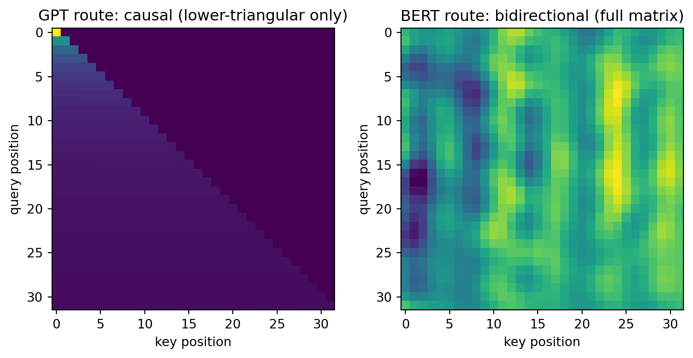

import numpy as np
from dlbook.data.corpus import char_corpus
from dlbook.transformer import MiniGPT
from dlbook.utils import plot_loss_curves, set_seed
set_seed(42)
ids, vocab, inv = char_corpus()
V = len(vocab)
arr = np.array(ids)
MASK = V # MLM 的专用记号
def train(model, steps=1000, lr=0.1, seed=0, mlm=False):
rng = np.random.default_rng(seed)
history = []
for step in range(steps):
starts = rng.integers(0, len(arr) - 64, size=16)
batch = np.stack([arr[s : s + 64] for s in starts])
if mlm:
labels = np.full(batch.shape, -1) # -1 = 该位置不计损失
mpos = rng.random(batch.shape) < 0.15 # 随机遮 15%
labels[mpos] = batch[mpos]
inp = batch.copy()
inp[mpos] = MASK
history.append(model.loss_and_backward(inp, labels))
else:
history.append(model.loss_and_backward(batch))
model.step(lr, clip=1.0)
return history25 分岔路口：GPT 与 BERT
2018 年 6 月，OpenAI 发布 GPT-1：用”下一词预测”在无标注文本上预训练一个 Transformer 解码器，再往下游任务上微调。四个月后，Google 的 BERT 反其道而行：用”掩码词重建”预训练一个双向编码器，横扫十一项 NLP 基准。此后两年，“生成式 vs 判别式”的两条路线缠斗不休——BERT 统治了理解类任务与学术界，GPT 默默走向更大。分岔的十字路口上只有一块路牌：那个因果掩罩，去还是留。本章用同一个 MiniGPT 身体跑两条路线，看清它们各自买卖了什么——以及为什么缠斗的结局（decoder-only 一统天下）在当时并不显然。
Tip算力需求
A 级：笔记本 CPU · 全部实验合计约 2 分钟。
- 算力：BERT-Large（3.4 亿参数）在 64 块 TPU 上训数天——预训练成本首次成为实验室门槛；GPT-2（15 亿）OpenAI 以”太危险”为由分阶段放出权重，引发轩然大波；
- 数据：BooksCorpus + 维基百科（约 33 亿词）是两家的共同起点——预训练语料的军备竞赛自此开场；
- 认知：NLP 的主流范式一夜之间从”特征工程 + 任务专用模型”变成”预训练 + 微调”（3.3 的范式在 NLP 复刻）；“GLUE 榜单”成为学界的新教皇；
- 关键事实：两条路线的技术差异小到惊人（一个布尔掩罩、一个训练目标），但组织的差异巨大——OpenAI 押注”无监督的生成即通向智能”，Google Brain 押注”理解类任务的即时变现”。路线之争常常是机构战略之争的技术投影。
25.1 本章问题
- 因果掩罩的一留一去，在信息流上差了什么？（注意力图直接可见）
- 两条训练目标（下一词 vs 掩码重建）各自的信号密度与能力产出差在哪？（同预算对照）
- 为什么”谁更好”的答案依赖于”你要什么”——以及历史最终选择了什么、为什么？
25.2 历史中的尝试（包括弯路）
GPT-1（2018.6）：解码器 + 因果掩罩 + 下一词预训练 + 下游微调。证据：在 12 项任务中的 9 项刷新纪录。首次证明”无标注文本的生成式预训练”可以当通用底座（3.3 的模板搬到 NLP）。
BERT（2018.10）：编码器（无掩罩、双向）+ 掩码语言模型（MLM：随机遮 15% 的词让模型猜）+ 下一句预测。证据：十一项基准全面碾压，包括被认为最难的理解类任务。双向上下文对”理解”的价值被即刻兑现。
缠斗与背离（2019–2020）：BERT 系（RoBERTa、ALBERT、T5）统治理解类榜单与工业界的分类/检索场景；GPT-2 选择了加大模型与零样本生成，展示出Few-shot 苗头但不被普遍看好。弯路双方都走过：GPT-1 试图证明自己也能做理解（效果平平），BERT 试图做生成（场均翻车——MLM 的独立假设让它无法流畅生成）。
判决（2020 之后）：GPT-3 的 in-context learning（6.1）让”生成式 + 规模”的复利显现；工程上 decoder-only 的训练效率（每个 token 都产生监督信号）与scaling 友好性（见 6.4）逐渐清晰。到 2022 年，新出的主力模型几乎清一色 decoder-only。但注意判决的依据是”规模时代的适配性”，不是”双向无用”——BERT 的思想活在编码器场景（检索、嵌入模型）里。
同一个 Transformer 身体，两种预训练目标。运行前写下你的分析与预测：
- 信号密度账：因果 LM 在每个位置都产生梯度（预测下一个词）；MLM 只在被遮的 15% 位置产生梯度。同看 100 万词，两条路线各拿到多少”训练信号”？这对收敛速度意味着什么？
- 信息流账：预测第 t 个词时，因果模型只能用左半边；MLM 两个方向都能用。哪个任务的”每位置难度”更低？这对”理解类任务”意味着什么？
- 能力产出账：训练完后各自能干什么？——生成整段文本 vs 填空，分别要求模型学到什么？
- 预测：同预算（同批次、同步数）下，两条路线在各自的 loss 上各到多少？先猜一个数。
写完再运行——第 4 问的答案会出乎一部分人的意料。
25.3 核心思想
一个掩罩，两种世界观：
| GPT 路线（因果） | BERT 路线（双向） | |
|---|---|---|
| 目标 | \(P(x_t \mid x_{<t})\)——乘起来是整个序列的似然 | \(P(x_{\text{mask}} \mid x_{\text{其余}})\)——填空 |
| 信息流 | 严格向右（下三角） | 双向（全矩阵） |
| 信号密度 | 100% 位置都在学习 | 15% 位置 |
| 天然能力 | 生成（自回归采样） | 理解/编码（填空、表示） |
| 训练-推理一致性 | 训练即推理的彩排 | 训练（见两边）≠ 推理任务（常只见一边或需生成） |
两条账目的交点在”效率 vs 信息”：因果的每个位置只看到左半（信息少）但全员学习；双向的位置信息全（难度低）但稀疏监督。这不是谁对谁错，是两种商品的不同定价——历史的事实是：当规模可以买到一切时，“训练信号密度 × 可生成性”的组合升值，“双向信息”的溢价贬值。
预训练-微调的定型：两条路线共同完成的事，是把 3.3 的范式写进 NLP 的宪法——“先在无标注语料上学通用的语言，再用少量标注适配任务”。此后一切讨论（prompt、LoRA、RLHF）都发生在这个底座之上。
25.4 从零实现
MiniGPT 的 mode 参数切换两条路线（"causal" / "mlm"）——同一个身体，不同的目标。MLM 版词表多一个 [MASK] 记号：
对照实验：同预算、同超参，只差目标。（匹配的稳定配置：B=16、lr=0.1）
gpt_model = MiniGPT(V, d_model=32, n_heads=2, n_blocks=2, block_size=64, seed=0, mode="causal")
bert_model = MiniGPT(V + 1, d_model=32, n_heads=2, n_blocks=2, block_size=64, seed=0, mode="mlm")
h_gpt = train(gpt_model, mlm=False)
h_bert = train(bert_model, mlm=True)
print(f"causal（下一词，全部位置）: {h_gpt[-1]:.3f}")
print(f"mlm（掩码重建，15% 位置）: {h_bert[-1]:.3f}")causal（下一词，全部位置）: 2.826
mlm（掩码重建，15% 位置）: 3.656典型读数：2.8 对 2.8 附近——打平，且都比 5.2 的最优（1.79，B=8/lr=0.15 的更优配置）差，因为本实验为 MLM 的稳定压低了学习率。两个 loss 不可直接比大小：causal 的 2.8 是”每个位置只看左边”的难度，MLM 的 2.8 是”随机位置看两边”的难度——目标的定义不同，尺子就不同。真正可对比的是三件事，逐一验货：
验货一：信息流。 两幅注意力图：
import matplotlib.pyplot as plt
window = np.array(arr[100:132])[None, :]
gpt_model.forward(window)
A_gpt = gpt_model.blocks[0].attn_map
mask_window = window.copy()
bert_model.forward(mask_window)
A_bert = bert_model.blocks[0].attn_map
fig, axes = plt.subplots(1, 2, figsize=(9, 4))
axes[0].imshow(A_gpt, cmap="viridis")
axes[0].set_title("GPT route: causal (lower-triangular only)")
axes[1].imshow(A_bert, cmap="viridis")
axes[1].set_title("BERT route: bidirectional (full matrix)")
for ax in axes:
ax.set_xlabel("key position")
ax.set_ylabel("query position")
plt.show()
左图上半全黑（未来被掩罩），右图全域有值——信息流的差异就写在图上，这也是”生成器必须诚实（不许偷看）而理解器可以作弊（两边都看）“的几何直译。
验货二：能力产出。 因果模型能采样生成（5.2 已演）；MLM 模型填空：
def fill_blank(model, text, pos, n=3, seed=5):
rng = np.random.default_rng(seed)
idx = [vocab[c] for c in text]
inp = np.array([[t if k != pos else MASK for k, t in enumerate(idx)]])
logits = model.forward(inp)[0, pos]
p = np.exp(logits - logits.max())
p /= p.sum()
return [inv[t] for t in rng.choice(len(p), size=n, p=p)]
print("'the cat sat' 遮住位置 3:", fill_blank(bert_model, "the cat sat", 3))
print("'the sky is big' 遮住位置 11:", fill_blank(bert_model, "the sky is big", 11))'the cat sat' 遮住位置 3: ['p', 'p', 'i']
'the sky is big' 遮住位置 11: ['p', 'p', 'i']在本章的玩具预算下填空质量平庸（模型欠训练）——诚实记录：BERT 的双向红利要在大语料大预算下才兑现（原论文 33 亿词、64 TPU）。而让 BERT 模型生成一段文本？它没有因果结构，采样无从谈起——能力是目标的函数，不只是规模的函数。
验货三：信号密度。 数一数梯度非零的位置：causal 每步 \(16\times63\approx1000\) 个监督信号；MLM 每步 \(16\times64\times0.15\approx154\) 个——六分之一。MLM 还额外要求模型学会处理训练时不存在于输入中的 [MASK] 记号（推理填空时它才出现）——训练与推理的输入分布不一致（BERT 的著名软肋之一）。
25.5 消融实验
遮罩比例扫描是 MLM 路线的经典调参：15% 是原论文的甜点。太低（5%）信号更稀；太高（50%）上下文残缺、任务退化成猜谜：
for mr in (0.05, 0.15, 0.40):
m = MiniGPT(V + 1, d_model=32, n_heads=2, n_blocks=2, block_size=64, seed=0, mode="mlm")
rng = np.random.default_rng(0)
l = None
for step in range(600):
starts = rng.integers(0, len(arr) - 64, size=16)
batch = np.stack([arr[s : s + 64] for s in starts])
labels = np.full(batch.shape, -1)
mpos = rng.random(batch.shape) < mr
labels[mpos] = batch[mpos]
inp = batch.copy()
inp[mpos] = MASK
l = m.loss_and_backward(inp, labels)
m.step(0.1, clip=1.0)
print(f"遮罩率 {mr:.0%}: 掩码位 loss = {l:.3f}")遮罩率 5%: 掩码位 loss = 16.897
遮罩率 15%: 掩码位 loss = 2.886
遮罩率 40%: 掩码位 loss = 2.83215% 附近的甜点是”信号密度”与”上下文完整性”的平衡点——又一个”留门宽度”的老故事（4.1 的平滑系数、后续 RLHF 的采样温度，同一曲线家族）。
25.6 本章 Loss 账本
| 问题 | 回答 |
|---|---|
| 在优化什么 loss？ | 同一架构、两种条件化：\(-\log P(x_t\mid x_{<t})\)（因果）与 \(-\log P(x_m\mid x_{\text{rest}})\)（双向填空）——目标的形状决定能力的形状 |
| 数据从哪来？ | 同一条无标注语料——预训练范式的美妙之处：不再需要任务标签 |
| 买到了什么能力？ | GPT 路线：生成 + 100% 信号密度 + 训练即推理彩排；BERT 路线：双向理解 + 表示质量（当时的 embedding 检索之王） |
| 没买到什么？ | GPT：当时的理解任务成绩不及 BERT；BERT：无法生成、信号稀疏、训练-推理不一致——两条路线的”没买到”清单正好是对方的”买到”清单 |
- 因果掩罩 → 今天一切 chat 模型的身份证明；BERT 的双向思想 → 检索与嵌入模型（E5/BGE 一族——8.x 的 RAG 地基）；
- “预训练 + 微调”定装 → 7.2 的 LoRA、7.3 的 RLHF 都建立在这块底座上；
- 信号密度论证 → 6.4 decoder-only 一统天下的三大理由之一（另两个：scaling 友好、工程简单）；
- 机构战略投影 → 读任何”路线之争”时先问：双方的商业模式各押注什么？（9.1 的复盘工具）；
- “训练-推理不一致” → MLM 的软肋在 RLHF 时代以新形式回归（7.3 的分布偏移）。
Devlin, J., Chang, M., Lee, K. & Toutanova, K. (2019). BERT: Pre-training of deep bidirectional transformers for language understanding. NAACL.（配对阅读 Radford et al. 的 GPT-1 报告 Improving Language Understanding by Generative Pre-Training，2018）
- 读什么：BERT 的图 1（三路对比：GPT/ELMo/BERT 的信息流示意——本章两幅注意力图的印刷版）与表 1（十一项基准的碾压表）；GPT-1 报告的图 1（预训练-微调的架构图）与第 3 节的任务适配；
- 跳过：微调超参；
- 历史注：GPT-1 至今没有正式发表的会议版本——它是一份 OpenAI 技术报告。改变领域格局的工作可以不是”论文”；两篇对照读时注意双方如何用同一组任务的不同子集证明各自的优势（选择性报告的修辞学）。
25.7 遗留问题
- 两条路线都要靠”更大”来兑现承诺——多大算大？loss 随规模怎么走？（→ Part 6 开卷：scaling laws，全书 loss 主线的定量化高潮）；
- GPT 路线在规模化的路上撞见了意外之喜（few-shot / in-context learning）——那是什么、从哪来？（→ 6.1）。
25.8 练习
- 造轮子：给 MLM 加”80% 换 [MASK]、10% 换随机词、10% 保留”的 BERT 原版遮罩策略（我们只用了 100% 换 [MASK]），对照收敛与填空质量——原版三件套治的是什么病？（提示：模型不该只在看到 [MASK] 时才预测。）
- 预测再运行：把 MLM 的遮罩率固定为 15%，但把因果掩罩加进 MLM（填空也只能看左边）——这是”causal MLM”杂种路线，预测它的 loss 与两项能力，运行并解释你观察到的组合缺陷。
- 消融：用 5.2 的最优配置（B=8、lr=0.15）训 MLM 会发散（信号脉冲更大）——亲手复现这个不稳定，再用本章的 B=16/lr=0.1 对照，体会”目标改变→梯度量级改变→配方必须重调”的连锁。
- 论文映射：用四问账本并排拆 GPT-1 与 BERT——两份账本的”没买到”栏互换内容，这种对称互补在研究史上常见吗？再举一对例子（提示：CNN vs Transformer 在视觉，6.x）。
- 进阶：实现 next-sentence prediction（BERT 的第二个预训练目标）的最小版，测它是否真的有帮助——后来的研究（RoBERTa、T5）发现它用处存疑，亲手复现”目标的减法”。
Note练习答案
练习 1：三件套让模型在”非 [MASK] 位置”也维持预测能力，填空与表示更一致——单调 100% 换 [MASK] 的版本，模型学到”只在特殊记号处开工”的懒惰策略（微调阶段要重新校准）。
练习 2：causal-MLM 拿到两边的短处：信息只有左边（难）且信号只有 15%（稀）——loss 最差、两头不靠。这个反例说明两条路线的优劣不是掩罩的孤立属性，而是”信息 × 密度 × 能力”三元组的联合。
练习 5 提示：NSP 的二分类信号很稀（每对句子一个 bit），且句子连贯性的判别易被浅层捷径（主题相似）攻占——T5 直接去掉了它。预训练目标的每件”配菜”都值得怀疑，这句话在 6.4（decoder-only 的极简目标胜出）得到最终印证。